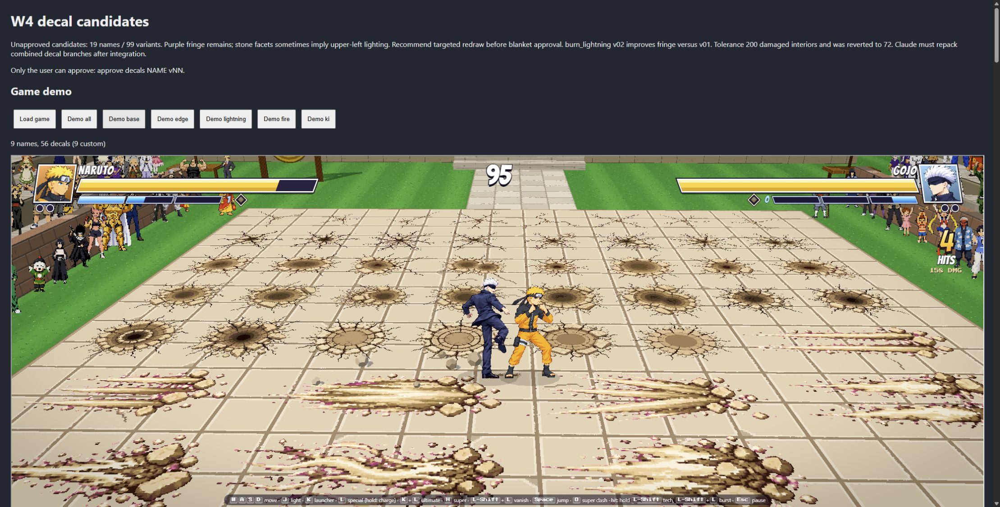
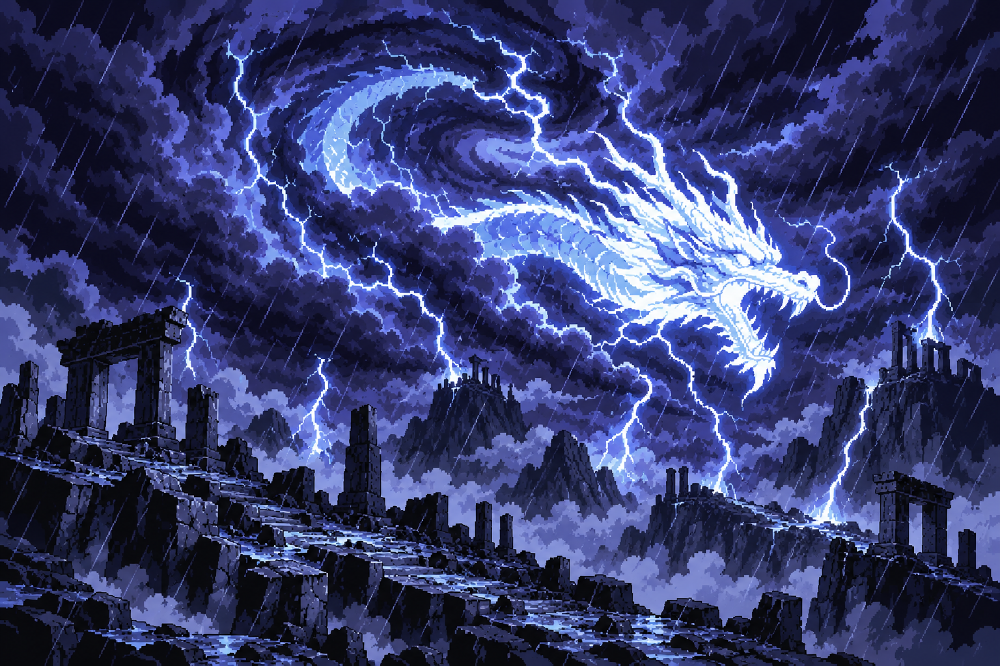
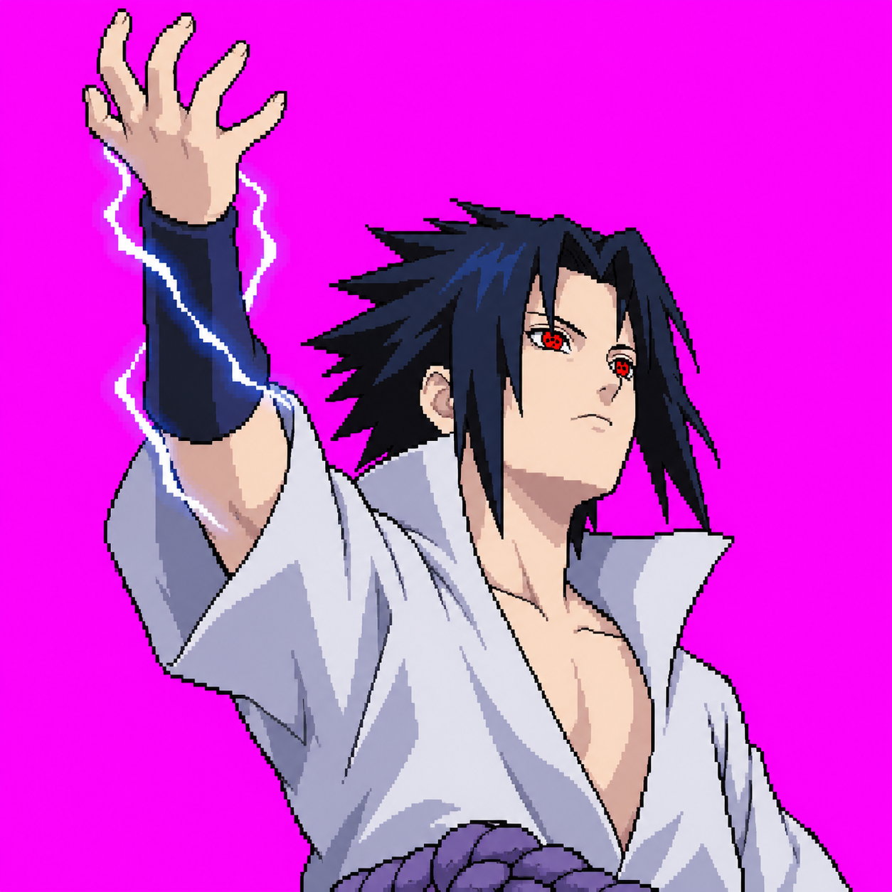
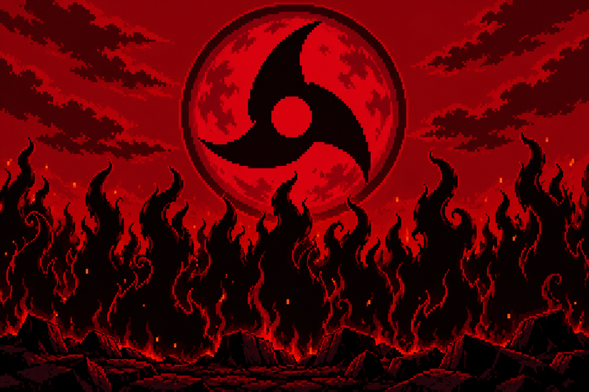
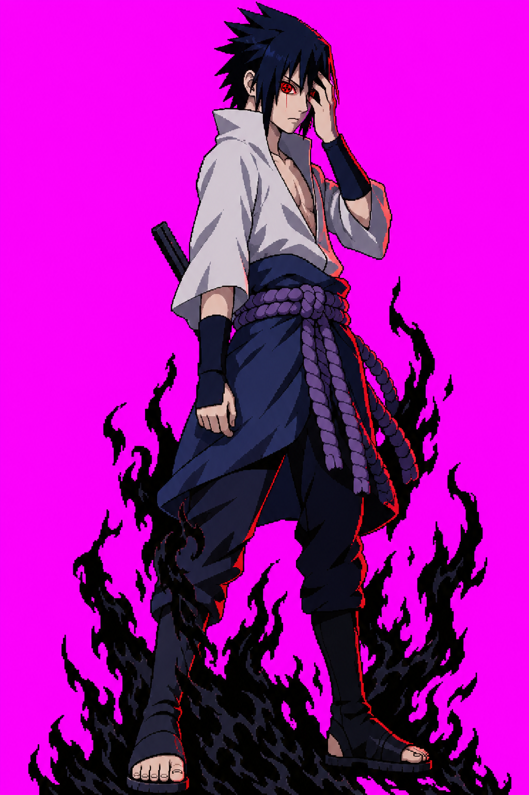

Backdrop · final 768 × 192
Open raw 1536 × 1024 source. Center crop y=320–704.
SASUKE PILOT · ROUND 1 · 2026-10-15 · FOUR CANDIDATES
Open each original for the raw image. Final-size views are representative crops/fits in browser sizing; sources remain unchanged.



Mock: 4:1 center band at top third over gameplay; Sasuke on left with head breaking above band.
Open raw 1536 × 1024 source. Center crop y=320–704.
Open raw source. Generator returned 1254 × 1254 instead of requested 1024 × 1024.


Centered phone crop; focal eye remains central.
Open raw 1536 × 1024 source. 16:9 crop y=80–944.
Approved references for identity comparison, with raw candidates below.


ADR 0035 · feedback: approve/reject each candidate or give correction notes. No further art generation is authorized by this approval.